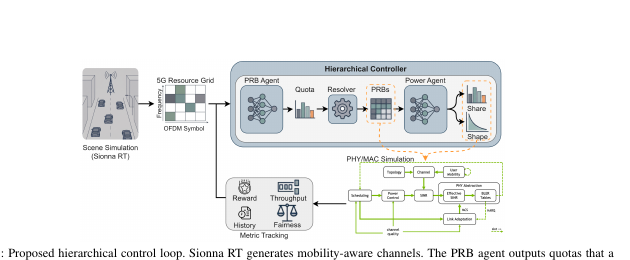
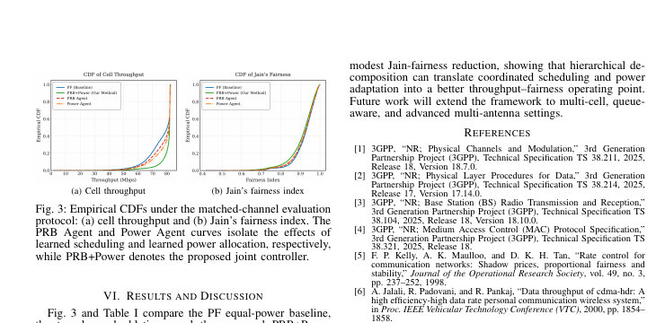

Hierarchical cooperative
control for 5G resources.
A ray-traced control demonstration in which one agent decides PRB quotas and another shapes power allocation, with Sionna RT supplying mobility-aware channels and PHY/MAC feedback.
Move from scene to scheduled PRBs.
Create an urban scene, vary users and channels, and compare quota-only, power-only, and joint control on throughput and Jain fairness.
What the demo shows
The joint PRB and power policy reports the strongest throughput improvement in the matched-channel evaluation, with a modest reduction in Jain fairness.
Quota decisions are resolved into exact PRB assignments before power control, reducing the combinatorial burden of directly learning every discrete and continuous variable together.
Sionna RT supplies mobility-aware channels while the PHY/MAC loop returns throughput, fairness, HARQ, and link-adaptation signals.


Figures are cropped from the submitted paper to show the system and the most relevant reported results.
Back to demos ↗